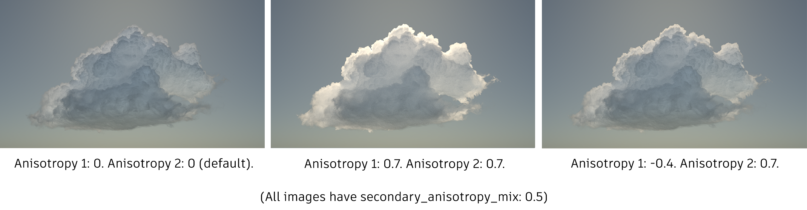
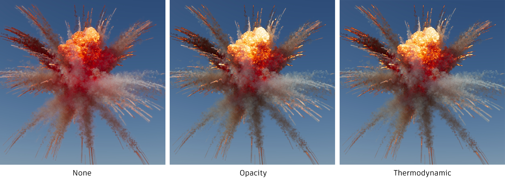
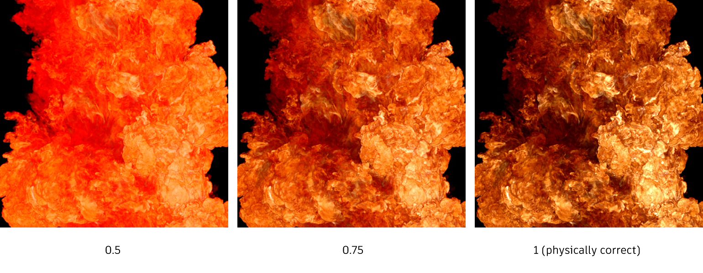
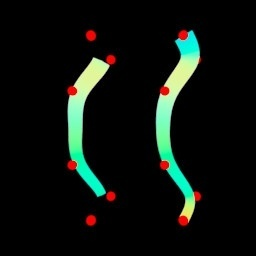

5.2.0
03 Aug 2022
MtoA 5.2.0 introduces Arnold 7.1.3.0 and is a minor feature release bringing improvements to volume shading and viewport rendering.
Installation
- Download the Arnold for Maya plugin
- Follow these installation instructions.
System Requirements
- Maya 2020, 2022 or 2023
- Windows 10 or later, with the Visual Studio 2019 redistributable.
- Linux with at least glibc 2.17 and libstdc++ 4.8.5 (gcc 4.8.5). This is equivalent to RHEL/CentOS 7.
- macOS 10.13 or later.
- CPUs need to support the SSE4.1 instruction set. Apple Mac models with M series chip are supported under Rosetta 2 mode.
- GPU rendering works on Windows and Linux only and requires an NVIDIA GPU of the Ampere, Turing, Volta, Pascal, or Maxwell architecture. We recommend using the 495.46 or higher drivers on Linux and 511.09 (Quadro), 511.09 (GeForce), or higher on Windows. See Arnold GPU for more information.
- Optix™ denoiser requires an NVidia GPU with CUDA™ Compute Capability 5.0 and above.
The driver type must be set to DCH.

In the driver page, select "Windows Driver Type:" DCH
The cache will also need to be re-populated after installing a new Arnold version, updating to a new NVIDIA driver , or changing the hardware configuration of GPUs on the system. More information can be found here .
Maya Plugins Compatibility
MtoA 5.2.0 works with the following Maya plugins
- Bifrost Extension for Maya 2.4.0.0
- MayaUSD 0.18.0 (USD 21.11)
Enhancements
Viewport rendering improvements: A new toolbar has been added to all model view panels to make it easier to run and control the Arnold Viewport Renderer. The new crop render tool allows users to select a crop region without needing to render a full viewport first (MTOA-1006)

Arnold Render View by Default: The Maya Render View has been replaced with the Arnold Render View for Arnold Renders and IPR, except for Render Sequence (MTOA-1008)
Emit Specular & Emit Diffuse Options on Maya Lights: This version adds support for the native Emit Specular and Emit Diffuse options on Maya lights (MTOA-1086)
Dual-lobe phase function for standard_volume: A new phase function model has been implemented for the standard_volume shader, which is a mixture of two lobes rather than a single lobe as before. This provides a more realistic approximation to the physical phase function of scattering media such as clouds. The new model adds two new parameters, scatter_secondary_anisotropy (in [-1,1]) and scatter_secondary_anisotropy_mix (in [0,1]). (ARNOLD-9335)
The cloud on the left (below), using the default anisotropy (0) settings, does not show much forward scattering. The center image (anisotropy 1: 0.7, anisotropy 2: 0.7) shows a strong "silver lining" at the rim of strongly forward scattered light from the sun behind. The cloud on the right (anisotropy 1: -0.4, anisotropy 2: 0.7) adds a secondary phase function lobe which fills in the bulk of the cloud with back-scattered light while maintaining the silver lining. 
The image below shows the full parameter space of the new dual-phase function model (each cell shows the phase function shape for a given combination of lobe anisotropies, which varies as the lobe mix weight is animated). The blue curves correspond to the old single lobe model.

Physically correct volume emission scaling: The standard_volume shader has been improved to support scaling of volumetric emission in a more physically correct manner (via the emission_scaling option). The "opacity" emission scaling mode is based on density and transparency and scaled appropriately to the opacity of the resulting volume. This is physically accurate for blackbody if the scattering color is black. The "thermodynamic" emission scaling mode is the most physically correct as it also takes into account scattering color, since according to thermodynamics volumes with higher scattering albedo emit less blackbody radiation. For example, burning hydrogen produces steam but barely emits blackbody radiation while sooty smoke readily does. This mode is most useful when mixing different types of volumes with varying scattering properties. (ARNOLD-11701)
The images below show the effect of the scaling mode on blackbody emission. The difference between opacity and thermodynamic modes here is that in thermodynamic mode the white, highly scattering smoke does not emit, while the black smoke does (which is a slightly subtle effect but more physically correct). 
Other volume emission improvements: The blackbody_intensity control can now be dialed above 1 for convenience. A blackbody_contrast parameter has also been added to (non-physically) reduce the brightness difference between parts of the volume at different temperatures, which can be useful for artistic purposes (ARNOLD-11701).
The images below show the effect of altering the new blackbody_contrast parameter. This reduces the disparity in brightness between parts of the volume at different temperatures, which tends to bring out the blackbody colors more vividly (though note that only value 1 is physically correct). 
Pinned curves: A new wrap_mode parameter on curves can enable curve pinning. Pinned non-periodic curves go through the first and last point without having to introduce phantom points, thus reducing the amount of data stored on disk. (ARNOLD-12209)
 The left curve's wrap_mode is set to nonperiodic, the right curve's is set to pinned.
Nested instancers: Nested instancers (instancer that contains instances of instancers) now properly perform instancing, fixing a severe overhead in node init/update time that made heavy use of nested instancers intractable. (ARNOLD-12410)
Cameras in ASS procedurals: Cameras stored in .ass file procedurals can now be used for rendering. (ARNOLD-12333)
Reduced missing texture overhead: The time spent handling missing textures has been reduced. Most likely this will be noticeable on file servers servicing a render farm. (ARNOLD-11915)
Light profile blocks: The AiLightsPrepare() profile result has been elaborated on, with LightSampling, light_filters, and LightInitSampler profile blocks being added. This will result in the self times reported for AiLightsPrepare() going down and these other profile blocks showing up with the corresponding times. This can help point out where render time is going during lighting. (ARNOLD-12439)
Python binding error message: When Arnold cannot be loaded by the python bindings, we now output the original exception error message instead of just the cryptic "Could not find libai". (ARNOLD-12366)
Cryptomatte 1.2.0: The version of Cryptomatte bundled with Arnold is upgraded to 1.2.0. (ARNOLD-12340)
Upgrade OpenImageIO 2.4.1: The OIIO used by Arnold has been upgraded to slightly newer than 2.4.1 (OIIO hash 7a662829b). (ARNOLD-12471)
USD Enhancements
- Support dataWindowNDC: when the render settings primitive defines the attribute dataWindowNDC, it now renders accordingly in both Hydra and the USD reader, by framing the render to the expected normalized window. (usd#1161)
- Cryptomatte in Hydra: When rendering final frames with Hydra, the cryptomatte metadatas are set in the output image. (usd#1164)
- Render products with no productName: When AOVs are defined through a render product prim that doesn't have any product name, they now render to the same filename as the beauty image. (usd#1170)
- Instances optimizations in the procedural: When using instances, the usd procedural now relies on a usdStageCache to represent the instance prototypes, instead of re-loading the usd files on disk for each prototype.
- Pinned curves: Curves pinning is now supported in the Hydra render delegate and in the USD procedural.
API Additions
- Unique identifiers for AtUniverse: Each universe has a unique ID that can be obtained through the new AiUniverseGetId() API. This ID can later be used to retrieve a pointer to that universe using the new AiUniverseGetFromId() API. (ARNOLD-12302)
- Print system info: The new AiMsgSystemInfo() outputs information related to the Arnold version, the system, and the devices. Even though this information was already printed at the start of an Arnold log, in certain cases it is useful to reprint it. (ARNOLD-12428)
- AI_LOG_STATUS mask: We introduced a new log mask called
AI_LOG_STATUSfor messages that Arnold generates to indicate what is currently occurring. For instance, it will report when GPU shader compilation is occurring, when rendering has started, when node init and update are starting, and so on. These messages can help plugins to explain to users what is going on and what, for example, Arnold is doing before rendering starts and the screen is still black. (ARNOLD-12219, ARNOLD-12502)
Incompatible Changes
Post translation scripts are now Python-based: A constant variable UNIVERSE_ID is set that can be used to retrieve the current render universe and change nodes after translation (MTOA-966). For example a user could set the translation script like so:
Post Translation Script
import sys,os filelocation=cmds.file(q=True,sn=True) dirpath=os.path.dirname(filelocation) sys.path.append(dirpath) import callback callback.callback(UNIVERSE_ID)Where the callback script called callback.py in the same folder as the Maya scene file contains this code to find the lambert1 node and make it green:
callback.py
import maya.cmds as cmds from arnold import * def callback(universeId): print(__file__) print("Universe ID : '{}'".format(universeId)) universe = AiUniverseGetFromId(universeId) node_it =AiUniverseGetNodeIterator(universe, AI_NODE_SHADER) while not AiNodeIteratorFinished(node_it): node =AiNodeIteratorGetNext(node_it) nodename =AiNodeGetName(node) print(nodename) if nodename == "lambert1": AiNodeSetRGB(node, "Kd_color", 0.2, 0.8,0.2) AiNodeIteratorDestroy(node_it)Improved AOV wildcards: When using AOV wildcard syntax and specifying a name for an output layer, the AOV type will be replaced by the given name. For example, using a wildcard of '
diffuse_*', a layer name of 'myLayer', and AOVs of 'red' & 'blue', the layers written into the EXR will be named 'myLayer_red' and 'myLayer_blue' instead of 'diffuse_red' and 'diffuse_blue' as before. (ARNOLD-12282)
Bug Fixes
MTOA-986 - You cannot select a Maya object in front of an aiStandin
MTOA-966 - PostTranslation scripts no longer can load the current universe to edit nodes before render
MTOA-1085 - Swatch rendering triggers WARNINGS
MTOA-1100 - System information missing from render logs
MTOA-1102 - Python3 Error in mtoa.ui.qt.syntaxhighlighter breaks aiOslShader AeTemplate
MTOA-1116 - Update Available information not working in Maya with python 3
MTOA-1109 - [USD] USD Export: Exporting using Arnold plugin settings and a parent scope crashes maya
MTOA-1063 - [USD] Exporting Arnold SkyDome with "arnold" plugin configuration and "Material X" checked on crashes Maya
ARNOLD-9636 - Cryptomatte does not work with multiple cameras or denoising
ARNOLD-12282 - Crash writing light groups with
preserve_layer_nameARNOLD-12337 - Compression setting for dwaa/dwab is too low
ARNOLD-12346 - Clip_geo crashes when rendered in multiple render sessions
ARNOLD-12441 - Json stats should place the shader "percent by depth" category under "shader calls"
ARNOLD-12470 - Empty/invalid mesh on mesh_light causes crash
usd#1168 Remove attributes reset in the lights delegate
usd#1165 Support double array primvars in the procedural
usd#1175 Fix authoring per-channel connections so that the output attribute exists
usd#1131 Revert to SdrShaderNodes for discovery plugin
usd#1179 Support filter-type attributes in the reader
usd#1205 Support several render products for the same render var
usd#1183 Fix usdPreviewSurface attribute useSpecularWorkflow in the procedural
usd#1191 Ignore distant lights normalize attribute in the delegate to match the procedural